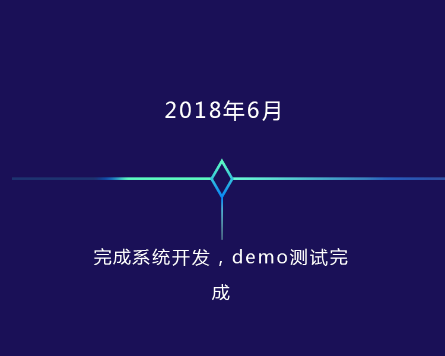
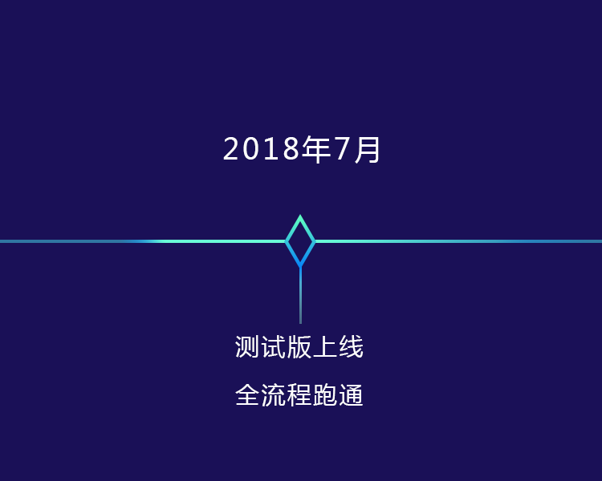
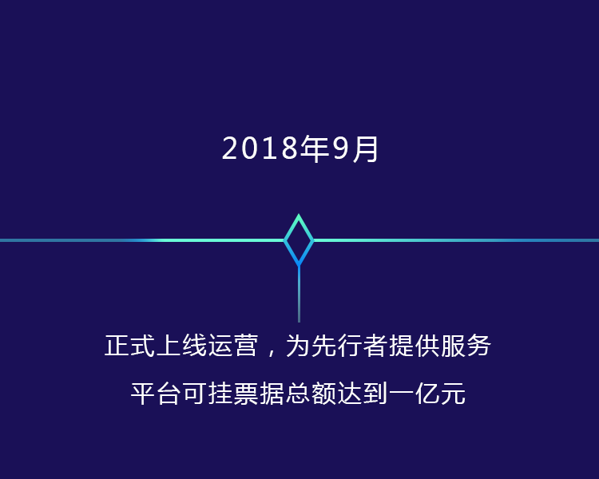
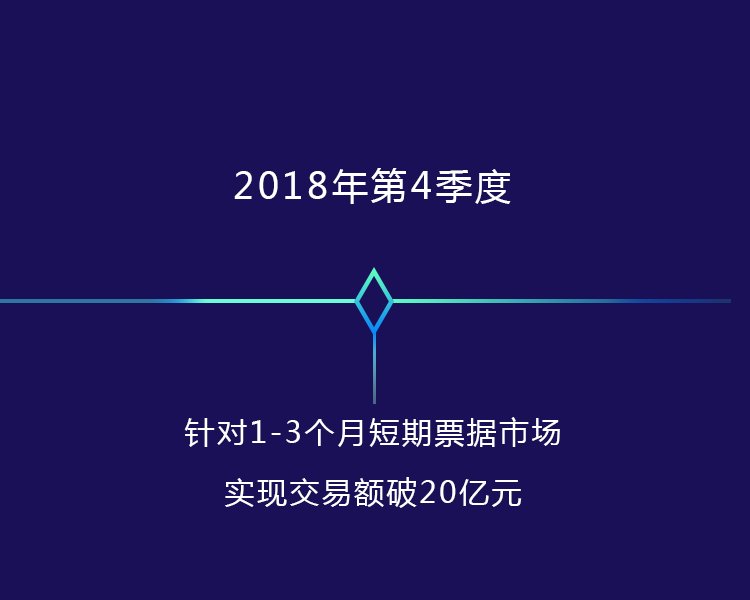

区块链时代全球首个金融票据
数字资产交易平台
运用区块链技术打造一个自发的、自治的、不断自我迭代的
去中心化的金融票据数字资产交易平台。
金融票据是什么？
FULCRUM所指的金融票据是中华人民共和国《票据法》中规定的“票据”， 是指由出票人签发的、约定自己或者委托付款人在见票时或指定的日期向收款人或持票人无条件支付一定金额的有价证券。FULCRUM的对标资产：电子银行承兑汇票是指由承兑银行 开立存款账户的存款人签发，并经银行审查同意承兑，保证在指定日期无条件支付确定的金额 给收款人或持票人的票据。换言之，银行承兑汇票的承兑依托的是银行信用。
为什么选择FULCRUM？
FULCRUM运用区块链技术提供了安全、高效、可信任的金融资产数字化 上链并流通的解决方案。利用智能合约的触发机制，在票据上链的同时 实现了票据的分拆与流转，实现了穿透。打破了由大额资金和部分中间 商垄断的中心化市场，从部分人控制的集体经济到人人可参与的共享经济， 真正实现了去中心化的票据应用场景。换言之长期的银行承兑汇票或是商业 承兑汇票不能满足企业即刻的资金使用需求，那么我们将提供更低成本、 更高效率、更安全的解决方案，帮助企业补充资金流动性，更好的发展事业。
前所未有的交易体验
利用智能合约自动触发即刻实现资金
流转，没有中心化机构，没有中介，杜绝欺诈
风险，实现区块链上人对人直接交易。
人人可参与的共享经济
搭载于区块链上的去中心化交易平台，
确保金融票据真实可信任并且低成本高效率
流转，而票据买家以极低风险参与金融票据投资，
享受本由大额资金垄断的金融制度红利。
全球化交易平台
为全球买家提供交易平台，投资优质金融票据
资产，且平台采用统一通证FC，规避
汇率变动带来的影响。
前所未有的交易体验
利用智能合约自动触发即刻实现资金
流转，没有中心化机构，没有中介，杜绝欺诈
风险，实现区块链上人对人直接交易。
人人可参与的共享经济
搭载于区块链上的去中心化交易平台，
确保金融票据真实可信任并且低成本高效率
流转，而票据买家以极低风险参与金融票据投资，
享受本由大额资金垄断的金融制度红利。
全球化交易平台
为全球买家提供交易平台，投资优质金融票据
资产，且平台采用统一通证FC，规避
汇率变动带来的影响。
FULCRUM能做什么？
传统贴现流程要经过银行隔夜拆（shibor）、 银行评级（开票银行级别不同贴现率不同）、 3-5层中介加价以及资金池加价，经过四个加价环节后， 贴现利率高，企业资金压力大，而且在传统贴现流程中票据无法拆分，一般投资人无法进行投资获利。
FULCRUM平台运用智能合约让票据持有人（企业） 能直接和买家交易，实现交易上链，交易过程安全， 透明，利率低，减轻企业资金负担。同时能实现票据拆分， 让一般投资人能有机会进行票据投资。
多方共赢
兑现利率远低于市场利率，降低企业融资成本， 给中小企业注入活力，盘活实体经济。
票据可分拆，使一般投资人可以进行票据小 额投资，享受优质银承资产红利。
FULCRUM用区块链技术从新定义票据交易，打通票据贴现堡垒， 创造多方共赢平台。
多方共赢
兑现利率远低于市场利率，降低企业融资成本， 给中小企业注入活力，盘活实体经济。
票据可分拆，使一般投资人可以进行票据小 额投资，享受优质银承资产红利。
FULCRUM用区块链技术从新定义票据交易，打通票据贴现堡垒， 创造多方共赢平台。
联系我们
项目进度
- 
- 
- 
- 
加入社群
lianbusiness
info@zhidianlian.cn
15101699799
加入社群
lianbusiness
info@zhidianlian.cn
15101699799